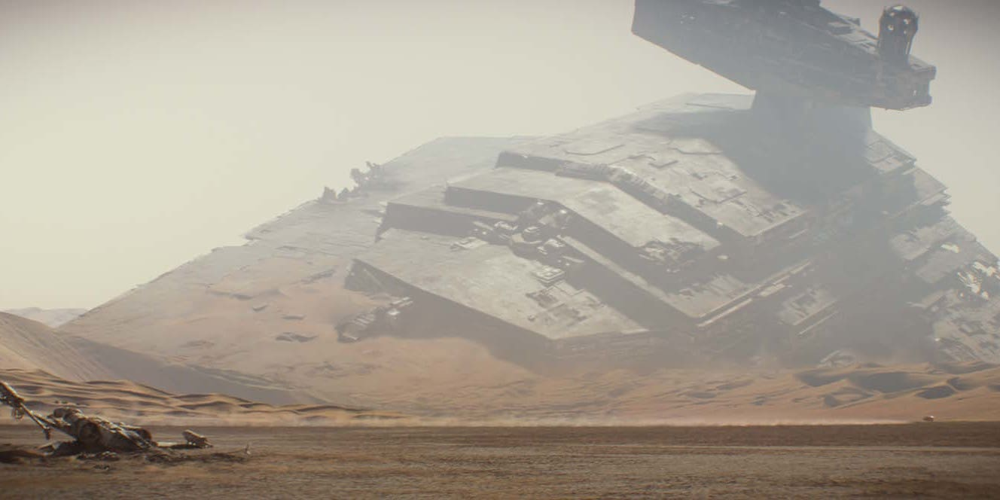
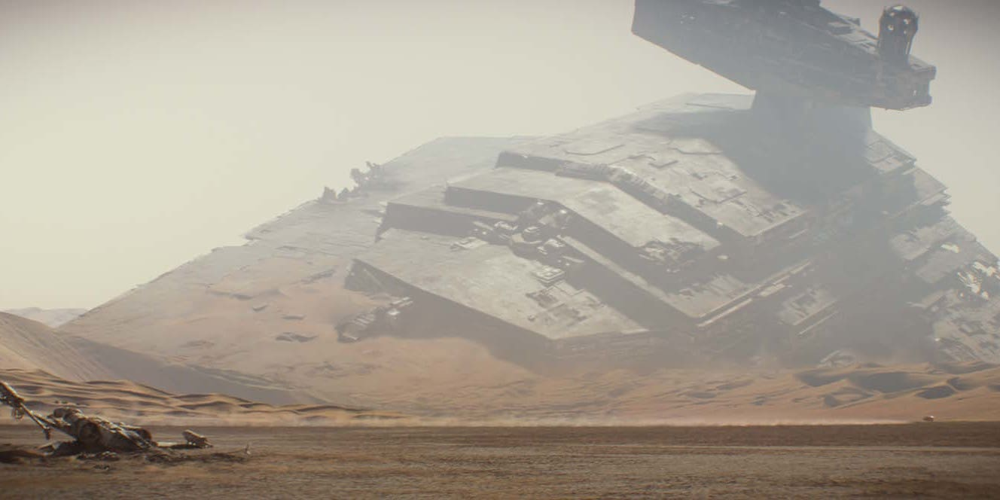

| Planeta | Categoria | Descrição e Bioma | Localização |
|---|---|---|---|
| Tatooine | Planeta | Deserto com dunas de areia e canyons rochosos. | Sistema Binário de Tatooine |
| Alderaan | Planeta | Planeta pacífico e cheio de vida, com paisagens verdejantes. | Sistema Alderaan |
| Dagobah | Lua | Floresta pantanosa e sombria. | Sistema Dagobah |
| Hoth | Planeta | Planeta gelado com vastas planícies de neve e gelo. | Sistema Hoth |
| Bespin | Planeta | Planeta gasoso com cidades flutuantes nas nuvens. | Sistema Bespin |
| Endor | Lua | Floresta densa com árvores gigantes. | Sistema Endor |
| Planeta | Categoria | Descrição e Bioma | Localização |
|---|---|---|---|
| Tatooine | Planeta | Deserto com dunas de areia e canyons rochosos. | Sistema Binário de Tatooine |
| Naboo | Planeta | Planeta exuberante com lagos, rios e colinas verdejantes. | Sistema Naboo |
| Coruscant | Planeta | Cidade-Planeta com arranha-céus gigantescos e luzes neon. | Sistema Coruscant |
| Kamino | Planeta | Planeta oceânico com uma enorme plataforma flutuante de clonagem. | Sistema Kamino |
| Geonosis | Planeta | Deserto rochoso com enormes colmeias de insetos alienígenas. | Sistema Geonosis |
| Utapau | Planeta | Planeta com cavernas gigantescas e grandes falésias de rochas. | Sistema Utapau |
| Mustafar | Planeta | Planeta vulcânico com rios de lava e um clima extremamente hostil. Lugar onde ocorre a batalha final entre Obi-Wan Kenobi e Anakin Skywalker. | Outer Rim |
| Planeta | Categoria | Descrição e Bioma | Localização |
|---|---|---|---|
| Jakku | Planeta | Deserto com destroços de naves espaciais espalhados por toda parte. | Sistema Jakku |
| Takodana | Planeta | Floresta antiga e misteriosa. | Sistema Takodana |
| D'Qar | Planeta | Planeta coberto de vegetação exuberante. | Sistema D'Qar |
| Starkiller Base | Asteroides | Asteroides ocos com um superlaser capaz de destruir planetas. | Sistema Starkiller |
| Ahch-To | Planeta | Ilha rochosa e selvagem com templos antigos e falésias íngremes. | Sistema Ahch-To |
| Crait | Planeta | Planeta coberto de sal branco com cavernas subterrâneas vermelhas. | Sistema Crait |